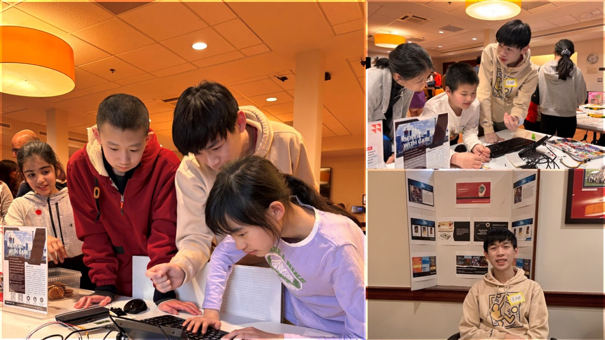

Blog Posts
Lexington Science Expo: CodeForward x Allstars Learning Collaboration
April 15, 2026

I founded a nonprofit educational organization CodeForward last summer with a goal to spark curiosity, build confidence, and make technology approachable and enjoyable for learners of all backgrounds. Since then, we have made meaningful progress toward this mission.
At this year's Lexington Science Expo, CodeForward was proud to collaborate with Allstars Learning, a nonprofit serving more than 150 families of children with special needs across the Greater Boston area, to deliver inclusive, hands-on STEM experiences.
Our shared goal was simple yet powerful: to make emerging technology accessible, engaging, and empowering for every child, regardless of learning style or ability. At our joint booth, children and families explored technology through interactive, guided activities intentionally designed for accessibility and hands-on engagement.
Instead of emphasizing complex theory, we focused on exploration, play, and real-world interaction.
Over the course of the three-hour science expo, volunteers and mentors spent time alongside each child, adjusting explanations, pacing, and activities to match individual needs. This personalized approach, core to Allstars Learning’s mission, naturally resonated with CodeForward’s commitment to inclusive and empowering learning experiences.
One moment, in particular, stood out: Raspberry Pi Exploration! Using Raspberry Pi devices, children explored foundational computing concepts such as inputs, outputs, and cause-and-effect interactions through hands-on experiment.
The visual and hands-on nature of the activities transformed abstract ideas into concrete experiences, helping children see computers not as mysterious machines, but as tools they could touch, control, and create with.
What CodeForward Brings to the Community
Our work at the Lexington Science Expo reflects CodeForward's broader mission: to expand access to emerging technologies through community partnerships.
By meeting kids and giving them room to explore at their own pace, we saw genuine excitement, meaningful engagement, and proud moments of discovery—from first interactions with AI to lighting up LEDs and triggering responses on a Raspberry Pi.
We are grateful to Allstars Learning, the families, volunteers, and the Lexington Science Expo organizers for making this experience possible.
Most of all, we are inspired by the children who reminded us why inclusive STEM outreach matters.
CodeForward looks forward to continuing collaborations that use technology not just to teach, but to connect, empower, and uplift our community.
References: